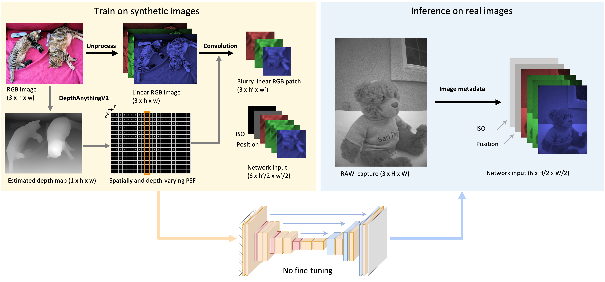

Efficient Depth- and Spatially-Varying Image Simulation for Defocus Deblur
Xinge Yang, Chuong Nguyen, Wenbin Wang, Kaizhang Kang, Wolfgang Heidrich, Xiaoxing Li
ICCV Workshop 2025.

Our method efficiently simulates depth-dependent defocus and spatially varying optical aberrations for training deep learning models that generalize effectively from low resolution synthetic images to high resolution (12MP) real-world images across diverse scenes.
Abstract
Modern cameras with large apertures often suffer from a shallow depth of field, resulting in blurry images of objects outside the focal plane. This limitation is particularly problematic for fixed-focus cameras, such as those used in smart glasses, where adding autofocus mechanisms is challenging due to form factor and power constraints. Due to unmatched optical aberrations and defocus properties unique to each camera system, deep learning models trained on existing open-source datasets often face domain gaps and do not perform well in real-world settings. In this paper, we propose an efficient and scalable dataset synthesis approach that does not rely on fine-tuning with real-world data. Our method simultaneously models depth-dependent defocus and spatially varying optical aberrations, addressing both computational complexity and the scarcity of high-quality RGB-D datasets. Experimental results demonstrate that a network trained on our low resolution synthetic images generalizes effectively to high resolution (12MP) real-world images across diverse scenes.
Paper
Paper [Yang2025DefocusDeblur.pdf]
Supplementary [Yang2025DefocusDeblur_supp.pdf]
Code [https://github.com/vccimaging/DeepLens]